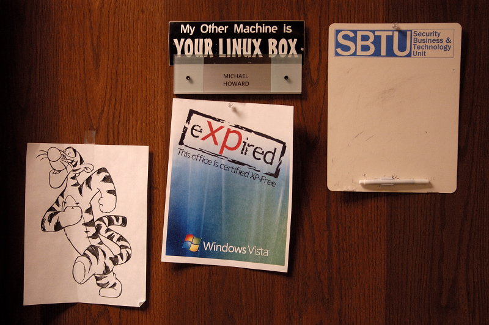
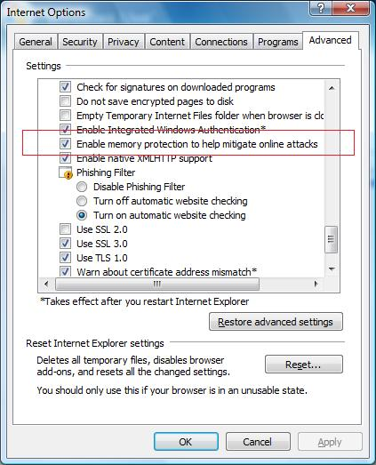
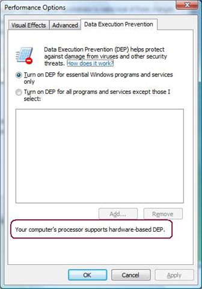

Howdy once again from RSA. It's raining. So much for sunny California!
Jeff and I just gave our talk about Windows Vista Security Engineering. It was a packed room. In fact, when we got to the room we saw a bunch of people milling around outside. We went to the door to enter and we were told we could not enter because the room was full. We thought the previous talk had yet to finish, but we were wrong, it was filled with people attending our talk. We asked if we could enter because we were the speakers, and again we were told, "NO" Then Jeff said, "seriously, we're the speakers." So they let us in. So much for security!
Anyway, back to the topic at hand.
There is a great deal of FUD about UAC. Yeah, it was very chatty in beta 2, but we really made a great deal of progress for the final release of Windows Vista. In general, it's a little chatty at the start, but once you settle in, install the apps you need, and the printer drivers and so on, it's pretty quiet.
But there is a perception that it's still very chatty. Here's a case in point. I bumped into a guy I haven't seen in a couple of years (let’s call him Xx) , here’s how the conversation went.
Me: How’s things?
Xx: Good, you?
Me: Kids doing well?
Xx: Growing up! How are Blake & Paige?
Me: Getting into my computers, read my blog.
Xx: What's new? Things going well with you?
Me: Excellent, we shipped Vista. Yay!
Xx: It’s ok.
Me: Waddya mean?
Xx: Too ‘noisy’?
Me: Waddya mean?
Xx: too many pop-ups.
Me: Like what?
Xx: UAC stuff
Me: When do you see the pop-ups?
Xx: all the time
Me: When?
Xx: When I do stuff
Me: Like what?
Xx: everything!
Me: like when? I probably get two prompts a day – and that’s only ‘coz I do geeky stuff. Gimme specifics
Xx: like right when I logon
Me: we suppress prompting on logon/startup, and fail the app load, you will see no prompts as you logon.
Xx: oh.
At this point Xx had a sheepish look...
Perception != Reality.
Howdy from RSA in San Francisco - I just got here, and I have a talk tomorrow morning @ 9AM about Windows Vista Security Engineering.
Now to the topic of this post.
One of my favorite features in Windows Vista is Parental Controls. I like the feature because my 5 year old son, Blake, loves to use the computer but I really don't want him using the computer too much, because he gets that glazed-over-eyes look. You know the look! So I limit his use to between 4PM and 7PM during the week, which basically means he can't use it before school.
The other day (a Saturday) he wanted to use the computer, and my wife had asked me to lock him out because he'd hit his sister, or something. So I tweaked the Parental Controls policy to block out Saturday. He came to me asking if he could use the computer because he couldn't logon. I said, No, because he'd hit his kid sister, or something.
I went to go about my own business, and came back fifteen minutes later to see that Blake had opened the computer case and, with screwdriver in hand, was trying to "fix things, daddy" so he could access the computer!
I didn't know whether to laugh, cry or be proud that my son wasn't going to be held back by some stinkin' software policy! :-)
I’ve been asked this question numerous times, often in the guise of a question like, “why can’t you guys simply fix the security problem?” or “reliability and scalability problems are understood and solvable, why can’t you do the same with security?” or my favorite variant, “what the heck keeps you interested in security when it seems you’re fighting a ‘no-win’ battle?”
First, there is little agreement around what constitutes a “security bug” so I’ll leave that subject for another day!
Next, I’m no expert on the science behind reliability or scalability, so I’ll take it at face value that when people say these issues are “understood and solvable” and they are being honest.
So what is it that makes security hard?
It’s simple:
- Scalability and reliability issues are man-vs-machine and machines are stupid.
- Security is man-vs-man and humans are intelligent.
This security stuff is an ongoing arms race and chess game, and each side is constantly trying to outwit the other. We raise the bar, and the attackers then spend time trying to defeat that bar. So we raise the bar again, and so on. With reliability and scalability, we can understand the “adversary” and that’s that. The "enemy" won’t adapt to defeat you!
To be honest, it’s this on-going intellectual battle that keeps me coming back to security, but it also means that no-one will ever build 100% secure computer products and this why we update the Security Development Lifecycle (SDL) twice a year as we learn new attack and defense techniques.
Jim Allchin has a great blog post about some of the design issues we went through and tradeoffs we made in Windows Vista around DEP, UAC, IE and so on. It's a
long, but worthwhile read.
This blog post outlines a bug in the macworld.com web site that allowed the blogger to get a Platinum Pass into MacWorld to see the Jobs' keynote.
I'm assuming the story is true! If it's not, it is still a fascinating read about insecure code.
MS07-004 does not affect Windows Vista, even though the coding bug is there. Why?
The bug is an integer overflow calling C++ operator::new, but the affected component vgx.dll is compiled with the C++ compiler available in Visual Studio 2005 that automatically detects integer overflows at runtime. All of Windows Vista is compiled with this compiler.
You can read more about this compiler change in a previous blog.
The moral of this story is developers will never find all code-level security bugs, so you need other defenses. Just in case!
This is great news. OneCare is one of my all-time-fave products. I love it because it was built knowing that the target user is no security expert. It wasn't built by geeks for geeks.
Everyone in my immediate family uses OneCare because (to quote my 70 year old father in law) "it's dead easy, simple and doesn't keep popping up messages I don't understand. I get green and stay green."
Windows Live OneCare 1.5 also works on Windows Vista, and yes, I will install it on my wife's computer :)
More info here.
Over the last couple of days, many people have asked for my take on the fact that Visual Studio 2005 SP1 requires admin privileges to run on Windows Vista, and pops up a dialog saying so when it starts up.
So, here’s my take, and I don't work for the Developer Division!
VS2005SP1 was developed while Windows Vista was being developed, and because of potential late-breaking regressions in the OS (which can happen), the VS team decided to simply do what most service packs do – fix bugs that stop people doing their jobs. Now that Vista has shipped, the VS team is working on an SP1 that works better as a non-admin on Windows Vista, and this is goodness.
Now to the pop-up that recommends you run as an admin. In my opinion, the VS team was simply being very conservative, because some scenarios simply do not work well as a non-admin. For example registering a COM control, installing or debugging a service, or performing admin tasks against SQL Server and so on all require elevated capability, as they very well should!
I probably spend 75% of my time writing and debugging C++ code, 20% of the time using C# and 5% doing SQL, and I always run as a non-admin. In fact I ran as non-admin for prior versions of Visual Studio on Windows XP! 99% of what I do works perfectly well. For the 1% of the time I need to do some admin task, I run an elevated VS.
In closing, the dialog is a little alarming, just do what I did – uncheck the option to display the dialog box and get on with life :-)
One more thing, the VS team has provided a list of known issues with VS on Windows Vista.
From the blurb:
During the development of Windows Vista, several key investments were made to vastly improve overall quality, security, and reliability from previous versions of Windows. While we have made tremendous investments in Windows Vista to ensure backwards compatibility, some of the system enhancements, such as User Account Control, changes to the networking stack, and the new graphics model, make Windows Vista behave differently from previous versions of Windows. These investments impact Visual Studio 2005. The Visual Studio 2005 Service Pack 1 Update for Windows Vista Beta addresses areas of Visual Studio impacted by Vista enhancements. Many of the Windows Vista enhancements are documented at the Windows Vista Development Center.
The update is here.
First, a very Happy New Year to you all...!
Second, due to incredibly popular demand, I managed to find the eXPired poster. I have added it as an attachment at the end of this blog post.

Enjoy.
Knowing the Enemy - A lightning demonstration on how hackers attack networks
http://www.microsoft.com/emea/itsshowtime/sessionh.aspx?videoid=351
Marcus Murray, Senior Security Architect, Truesec
Advanced Malware Cleaning
http://www.microsoft.com/emea/itsshowtime/sessionh.aspx?videoid=359
Mark Russinovich, Technical Fellow, Platform and Services Division, Microsoft
Windows Vista User Account Control Internals
http://www.microsoft.com/emea/itsshowtime/sessionh.aspx?videoid=360
Mark Russinovich, Technical Fellow, Platform and Services Division, Microsoft
Defending Layer 8: How to recognize and combat social engineering
http://www.microsoft.com/emea/itsshowtime/sessionh.aspx?videoid=339
Steve Riley, Senior Program Manager, Security Business and Technology, Microsoft Corporation
Windows Vista Kernel Changes
http://www.microsoft.com/emea/itsshowtime/sessionh.aspx?videoid=340
Mark Russinovich, Technical Fellow, Platform and Services Division, Microsoft
Windows Vista Firewall and IPSec Enhancements
http://www.microsoft.com/emea/itsshowtime/sessionh.aspx?videoid=352
Steve Riley, Senior Program Manager, Security Business and Technology Unit, Microsoft Corporation
Well, the VS team shipped VS2005 SP1. You'll need the updated linker to support ASLR on Windows Vista. All it does is add a new setting to your PE header.
So grab the update, and link your EXE with the new /dynamicbase option.
Voila!
Because browsers can host plug-in extensibility, security settings within the browser can make plug-ins fail. This is why in Internet Explorer 7 Data Execution Prevention (DEP) is off by default. When it is enabled many plug-in components fail to run, often crashing the browser.
You can enable DEP by navigating to the following dialog and checking the highlighted option shown below (note, you must elevated to admin first, otherwise the option is grayed out):

I have some great news, however.
Two of the most well-known and commonly used browser plug-ins, the Adobe Acrobat/Reader browser helper object and the Adobe Flash Player, now run when DEP is enabled.
So jump on over to the Adobe site, download the latest versions of Flash Player and Acrobat Reader, and enable DEP in IE7! I have!
A Big Thanks to the folks at Adobe for doing this.
As I mentioned in a previous series of posts, we recently had all the major OEMs on campus to discuss SDL and how we can work together. My big ask of the OEMs (actually, I grovelled, it was pathetic) was to enable DEP/NX in the BIOS by default on all their shipping PCs in time for Windows Vista.
The reason for this ask is pretty simple, for ASLR to be effective, DEP/NX must be enabled by default too.
Here's the good news, I found out yesterday that all the major OEMs (you know who they are!) have agreed to not disable DEP/NX in their BIOSs by default.
This is huge!
If you're an OEM reading this - THANKS!
Note, you can verify if your PC has DEP enabled by following these steps.
- Open the Control Panel
- Select System & Maintenance
- Click System
- Click Advanced system Settings
- Click the Advanced tab
- Click Performance Settings
- Click the Data Execution Prevention tab
You should see the dialog box below. If not, check your BIOS and make sure your CPU is capable of DEP/NX, most CPUs these days support DEP/NX.
